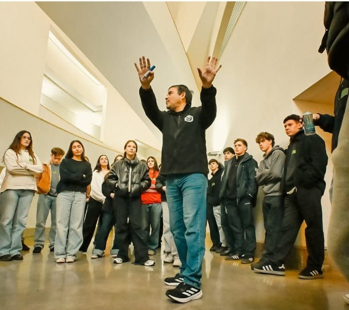
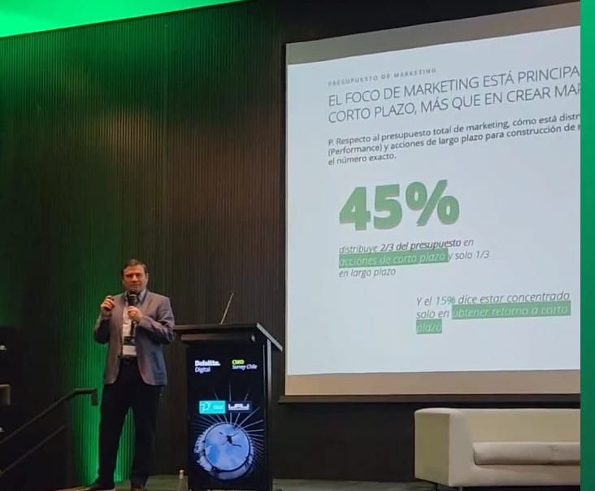

Marketing
Analytics
& Estrategia
Profesor en Universidad Adolfo Ibáñez. Especialista en analítica de marketing, inteligencia artificial aplicada y métricas de negocio. Santiago · Viña del Mar, Chile.

Puente entre datos
y decisiones de marketing
Soy Docente Asistente en Universidad Adolfo Ibáñez, donde enseño en la Escuela de Negocios, la Facultad de Ingeniería y Ciencias y la Escuela de Comunicaciones, tanto en pregrado como en postgrado, en los campus de Santiago y Viña del Mar.
Mi enfoque está en conectar la analítica de datos con la estrategia de marketing real, usando casos de empresas chilenas y herramientas del estado del arte. Soy investigador de analytics y métricas del CMO Survey Chile en colaboración con Deloitte, uno de los estudios de referencia sobre tendencias de marketing en el país.
En el ámbito de la consultoría, trabajo junto a Serge De Oliveira en proyectos de estrategia de marketing digital para empresas y consultoras. Además soy creador de SimMarketing.cl, simulador pedagógico de marketing digital para educación superior.
De la sala de clases
a la práctica
Cursos & Programas

UAI · Actividad con estudiantesAnálisis de datos aplicado a decisiones de marketing. RFM, CLV, segmentación, forecasting y modelos predictivos con casos chilenos.
Fundamentos de marketing con enfoque en análisis de demanda, segmentación y estrategia de marca con casos chilenos.
Herramientas de inteligencia artificial aplicadas a marketing: automatización, generación de contenido y análisis predictivo.
KPIs, dashboards y marcos de medición para evaluar el rendimiento de campañas y estrategias de marketing.
Integración de comunicaciones estratégicas y marketing en contextos corporativos y de marca.
Programa ejecutivo orientado a la gestión estratégica de equipos comerciales y métricas de ventas.
Conectando academia
con industria

CMO Survey Chile · Deloitte DigitalCMO Survey Chile
Investigador de analytics y métricas del CMO Survey, el estudio anual de referencia sobre tendencias de marketing en Chile. Analiza inversión, prioridades y adopción tecnológica de los directores de marketing del país.
↗ En colaboración con Deloitte ChileIA Aplicada al Marketing
Investigación y desarrollo de metodologías para integrar herramientas de inteligencia artificial en estrategias de marketing, incluyendo automatización, análisis predictivo y personalización a escala.
↗ Marketing AI-Voice Lab · UAIInnovación Docente
Diseño de metodologías activas de aprendizaje para cursos de analytics: gamificación, actividades de encuesta en vivo, análisis con datos reales de la industria y laboratorios de herramientas digitales.
↗ Concurso Innovación Docente UAIArtículos en Medium
Asociaciones que
sigo de cerca
Comunidades del ecosistema de marketing en Chile que sigo y me interesan.
Hablemos de
marketing & datos
Estoy disponible para colaboraciones académicas, consultorías, talleres empresariales o charlas. También puedes encontrarme en mis redes profesionales y seguir mis artículos en Medium.